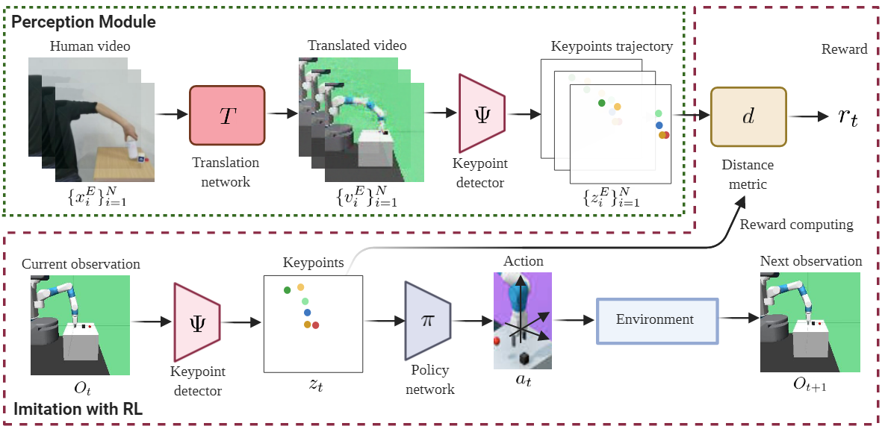
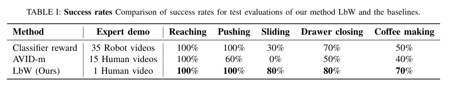
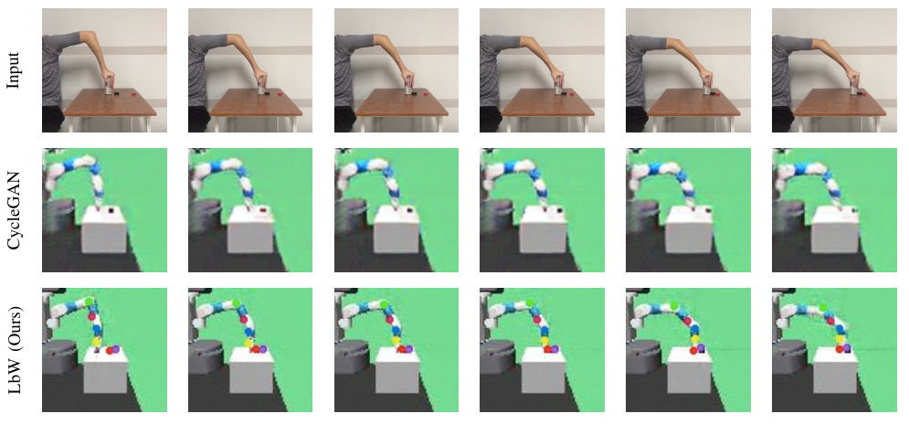
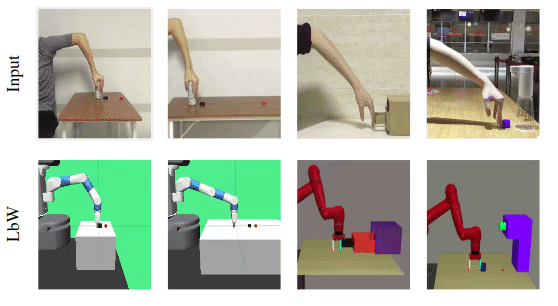

Learning by Watching: Physical Imitation of Manipulation Skills from Human Videos
Preprint. Under review.
Abstract
Learning from visual data opens the potential to accrue a large range of manipulation behaviors by
leveraging human demonstrations without specifying each of them mathematically,
but rather through natural task specification. In this paper, we present Learning by Watching (LbW),
an algorithmic framework for policy learning through imitation from a single video specifying the task.
The key insights of our method are two-fold.First, since the human arms may not have the same morphology as robot arms,
our framework learns unsupervised human to robot translation to overcome the morphology mismatch issue. Second, to capture
the details in salient regions that are crucial for learning state representations, our model performs unsupervised keypoint
detection on the translated robot videos. The detected keypoints form a structured representation that contains semantically
meaningful information and can be used directly for computing reward and policy learning. We evaluate the effectiveness of our LbW
framework on five robot manipulation tasks, including reaching, pushing, sliding, coffee making, and drawer closing. Extensive
experimental evaluations demonstrate that our method performs favorably against the state-of-the-art approaches.

The resulting keypoint-based representations provide semantically meaningful information that can be directly used for
reward computing and policy learning. We evaluate the effectiveness of our approach on five robot manipulation tasks,
including reaching, pushing, sliding, coffee making, and drawer closing. Detailed experimental evalu- ations demonstrate
that our method performs favorably against previous approaches.
Motivation
In robotic imitation learning, collecting expert demonstrations remains expensive and challenging as it assumes access to both
observations and actions. We aim to relax this expert supervision to human videos alone.
To bridge the human-robot domain gap, one way is to translate the human videos to the robot domain using a generative
modeling approach. However, translation is generally imperfect.
Our key insight: explicitly exploiting the kinematics and motion information embedded in the video to learn structured
representations via translation and unsupervised keypoint detection.
Contribution
1) We propose a perception module for physical imitation from human videos using human to robot translation and unsupervised keypoint detection.
2) The resulting keypoint-based representations can be used to compute the task reward with a simple distance metric.
3) Experimental results on five robot manipulation tasks show that our method greatly outperforms previous works。
Method

Our LbW model is composed of three main components: an image-to-image translation network T, a keypoint detector Ψ, and a
policy network π. The image-to-image translation network translates the input human demonstration video frame by frame
to generate a robot demonstration video. Next, the keypoint detector takes the generated robot demonstration video as
input and extracts the keypoint-based representation for each frame to form a keypoints trajectory. At each time step,
the keypoint detector also extracts the keypoint-based representation for the current observation. The reward for physical
imitation is defined by a distance metric d that measures the distance between the keypoint-based representation of the
current observation and those in the keypoints trajectory. Finally, the keypoint-based representation of the current
observation are passed to the policy network to predict an action that is used to interact with the environment.
Qualitative Results

To verify the effectiveness of our perception module fairly, we implement two baselines using the same control model as LbW,
but different reward learning methods. we use success rate as the metric to compare our method with the baselines. At
test time, the task is considered to be a success if the robot is able to complete the task within a specified number of
time steps. The results are evaluated by 10 test episodes for each task.

Given a human video as input in the first row, we present the translated images of CycleGAN in the second row. In the third
row, we visualize our translated images and the detected keypoints produced by the perception module. Our perception module
accurately detects the robot arm pose and the location of the interacting object.
